Personajes
En este apartado hacemos una breve explicación de la participación que han tenido ciertos personajes en la historia de Castelvania
Universo Soma Cruz

|
Leon Belmont es el primero de los Belmont, el es el culpable de la muerte de Walter Bernhard, el vampiro que rapto a su esposa, y es el primer portador del vampire killer |
|---|---|
| 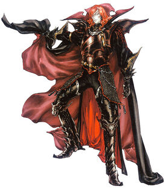 |
Walter Bernhard es un vampiro, el cual secuestro a la esposa de Leon Belmont, el cual posteriormente acabaria asesinandolo. Este vampiro poseeia la piedra carmesi en su interior. |

|
Sara Trantoul es la esposa de Leon Belmont, esta es secuestrada por Waltaer Bernhard, al final Sara acaba transformandose en vampiro, y sacrificandose para poder crear el vampire killer |
| 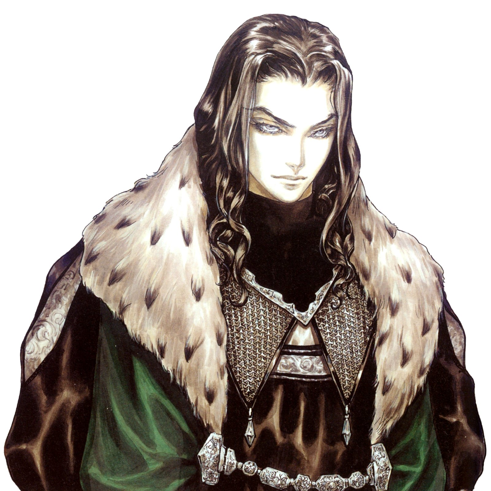 |
Mathias Cronqvist es el amigo de leon Belmont, el cual tras perder a su esposa siente que dios le ha traicionado y decide volverse un vampiro, para lograrlo manipula a Walter Bernhard y a Leon Blemont haciendo que Leon mate a Walter y así este libere la piedra carmesi de su interior, cuando esto sucede Mathias roba la piedra, transformandose en Dracula |

|
La muerte es un ser oscuro el cual obedecera las ordenes de aquel que poseea la piedra carmesi, este ser inicialmente obedecia a Waltaer Bernhard, pero posteriormente paso a obedecer a Dracula. |
| 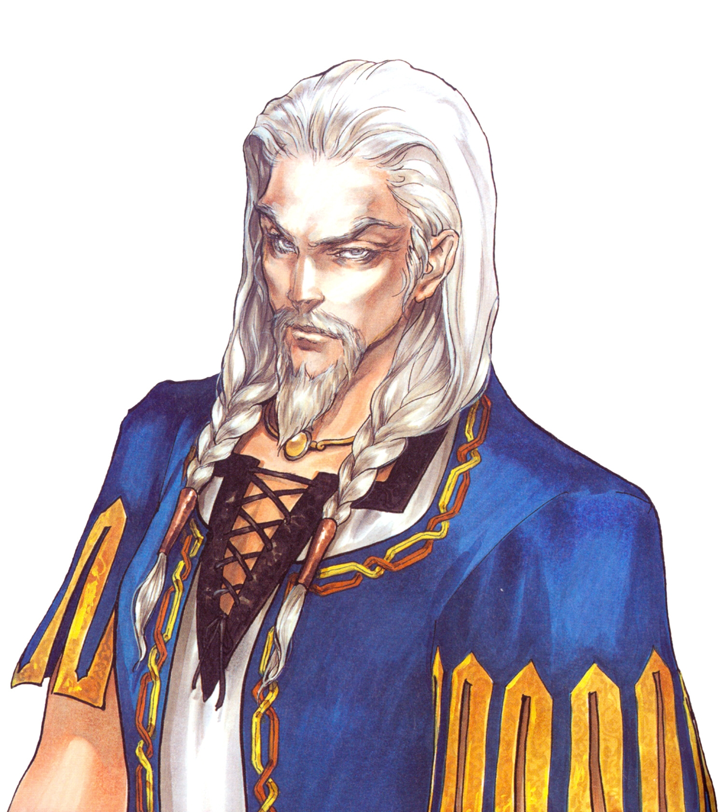 |
Rinaldo Gandolfi es un alquimista que perdio a su familia por culpa de Walter Bernhard, es el creador del vampire killer |
| 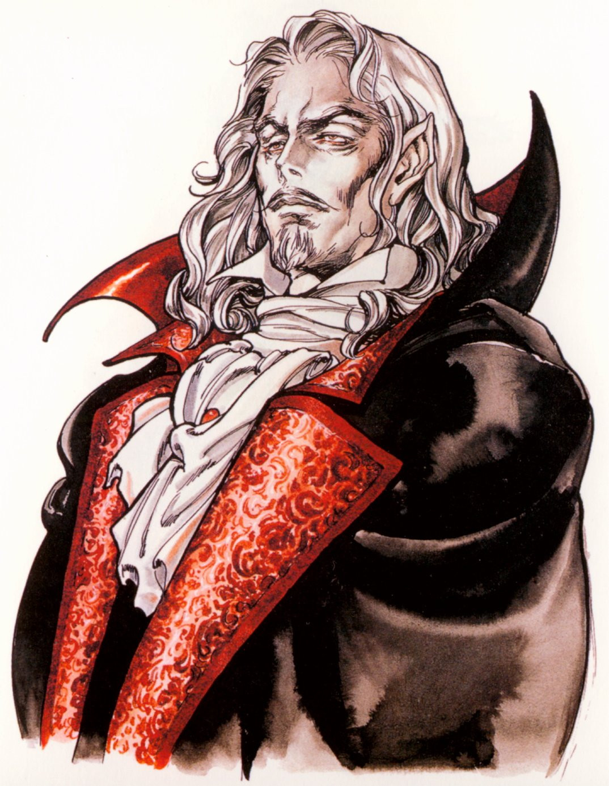 |
Mathias Cronqvist al transformarse en vampiro cambio su nombre al de Vlad Tepes. Dracula se convirtio en el señor oscuro, el ser oscuro mas poderoso del mundo, esto causo que todo tipo de seres oscuros le jurasen lealtad y formasen parte de su nuevo ejercito. Dracula crao un castillo nombrado Castelvania, durante mucho tiempo Dracula vivio en este castillo, asesinando y empalando a cluelquiera que se acercase, hasta que un dia una mujer llamada Lisa de la cual se enamoro y con la que ejendro un hijo llamado Adrian Farhenheit. Un dia un pueblo cercano a Castelvania rapto y quemo a Lisa, pensando que esta era una bruja, esto proboco la ira de Vlad el cual se sintio traicionado por dios otra vez y en consequencia volvio a cambiar su nombre a Dracula, comenzo a mobilizar su ejercito con el fin de acabar con toda la humanidad. Dracula era vencido por la familia Belmont cada vez que resucitaba, hasta que en 1999 su alma seria destruida por Julius Belmont acabando con Dracula por completo. |
| 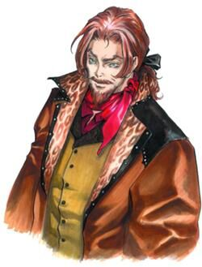 |
Julius Belmont es el último de los Belmont, y es el causante de la muerte definitava de Dracula |
| 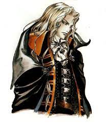 |
Adrian Farhenheit es el hijo de Dracula,cuando su madre fue asesinada y su padre empezo a asesinar a la humanidad el se cambio al nombre a Alucard debido a que estaba en desacuerdo con las acciones de su padre, Alucard ayuda a varios Belmont a derrotar a Dracula en distintas ocasiones y guia a Soma cruz para evitar que se combierta en el siguiente señor oscuro. |
| 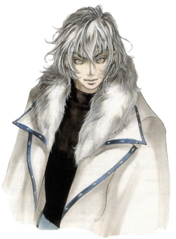 |
Soma Cruz es la rencarnacion de Dracula, por lo que una secta que adoraba a Dracula decide secustrarlo para volverlo el proximo señor oscuro, sin embargo gracias a la ayuda de Alucard y de Julius consigue evitarlo. |
Universo Gabriel Belmont

|
Gabriel Belmont es un guerrero huerfano perteneciente a la hermandad de la luz, el cual tubo un hijo llamado Trebor Belmont. Gabriel durante su etapa como humano fue manipulado por Zobek para que cometiera diversos asesinatos, uno de estos fue a su esposa Marie. Después de un tiempo descubre que Zobek lo estaba utilizando para asesinar a determinados objetivos con el fin de que Gabriel juntase poder y posteriormente se lo robase todo, pero Gabriel consiguio derrotarlo y al descubrir la verdad su mente colapso y se convirtio en el señor oscuro cambiandose el nombre a Dracula. Ya como vampiro peleo contra su hijo Trebor, y al acabar la pelea lo convirtio en vampiro y le bautizo como Alucard. |
|---|---|
| 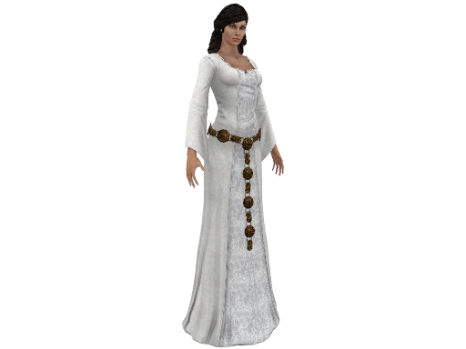 |
Marie es la difunta esposa de Gabriel, la cual una vez muerta intenta ayudar a Gabriel pero no lo consigue, unaa vez Gabriel se transforma en Dracula Marie decide apoyar a su hijo Trebor para que este pueda acabr con su padre. |
| 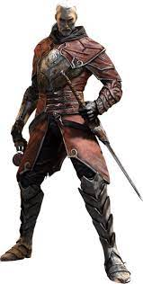 |
Zobek es el señor oscuro de los nigromantes, el cual manipula a Gabriel para que asesine a ciertos seres y así acumule poder, el cual Zobek planeaba robarle, pero Gabriel acabo derrotandole |
| 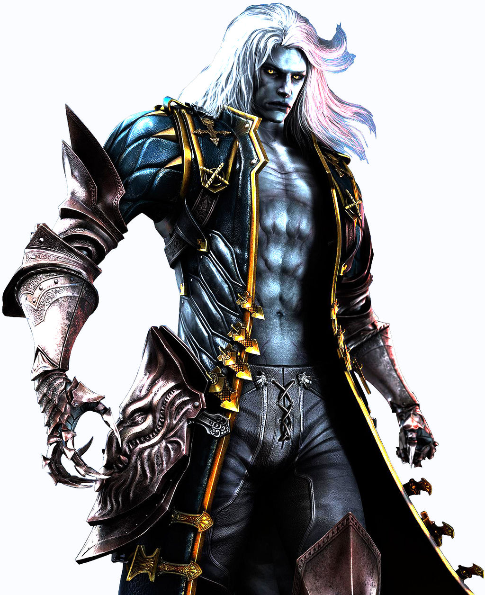 |
Trebor Belmont es el hijo secreto que tubieron Marie y Gabriel, este crecio guardandole rencor a su padre por matar a su madre y por manchar el linaje Belmont al convertirse en un ser oscuro. Cuando Trevor y Dracula se enfrentan, Trevor termina grabemente erido, pero Dracula consigue transformarlo en vampiro antes de que muera y lo bautiza como Alucard, una vez Trevor despierta, ahora como vampiro Trevor se vuelve a enfrentar a su padre y esta vez logra vencerlo |
Serie
| 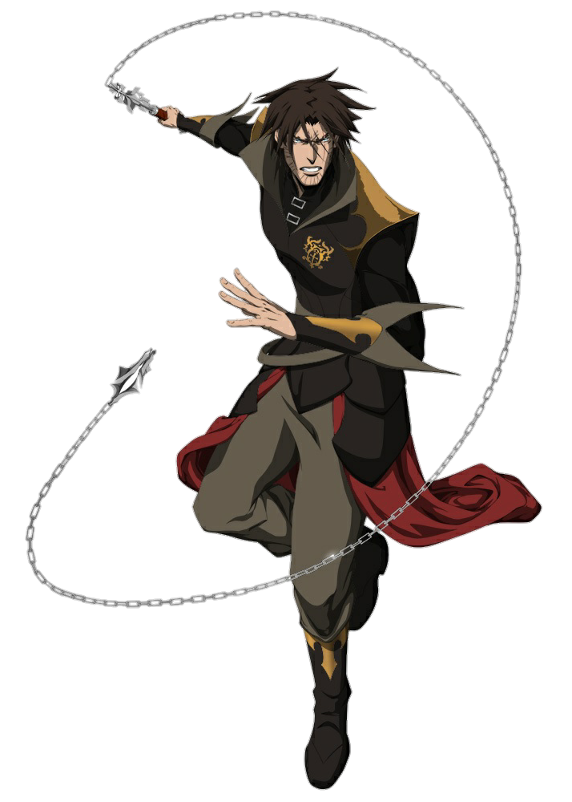 |
Trevor Belmont es el último de los Belmont el cual junto a Alucard y junto su esposa Sypha Belnades consiguen asesinar a Dracula, después de esto Trevor junto a Sypha viajan por todo el mundo asesinando a todos los seguidores de Dracula para así evitar quee este regrese. |
|---|---|
| 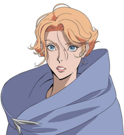 |
Sypha Belnades es una maga, que tras encontrarse con Trebol Belmont decide acampañarlo en su mision de derrotar a Dracula, una vez asesinan a Dracula Sypha se enamora de Trebor y decide acompañarlo en sus viajes para poder protegerlo |

|
Alucard es el hijo de Dracula, el cual tras la muerte de su madre y ver los actos e intenciones de su padre decide que debe asesinarlo, para ello se alia con Trebor Belmont y con Sypha Belnades, una vez mata a su padre Alucard se exilia voluntariamente durante un tiempo hasta que descubre que otros vampiros estan esclabizando personas, lo que proboca que decida ir a liberar a todos los humanos |
| 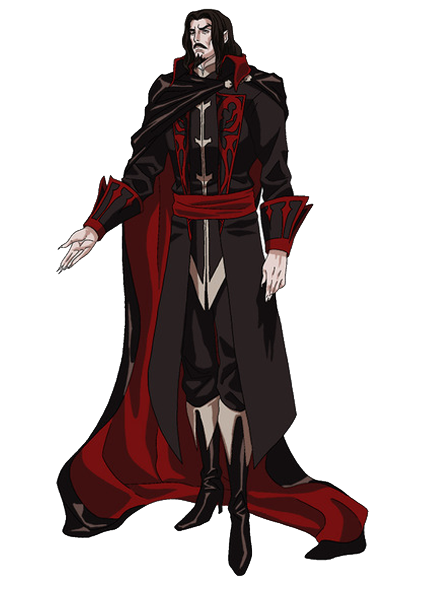 |
Dracula vivia solo en su castillo y asesinaba y empalaba a cualquiera que se acercase, hasta que un dia una mujer llamada Lisa llega a su castillo, Lisa y Dracula se enamoran y tienen un hijo llamado Alucard. La mujer de Dracula un dia es incinerada en la hoguera debido a que la iglesia la acusaba de brujeria, Tras ocurrir esto Dracula estalla en colera y decide iniciar una guerra con el fin de acabar con la raza humana, para esto reune varios sus subditos entre los cuales se encuentra una vampira llamada Carmila, esta lo traiciona lo que provoca que Trebor Belmont, Sypha y Alucard consigan asesinarlo |
| 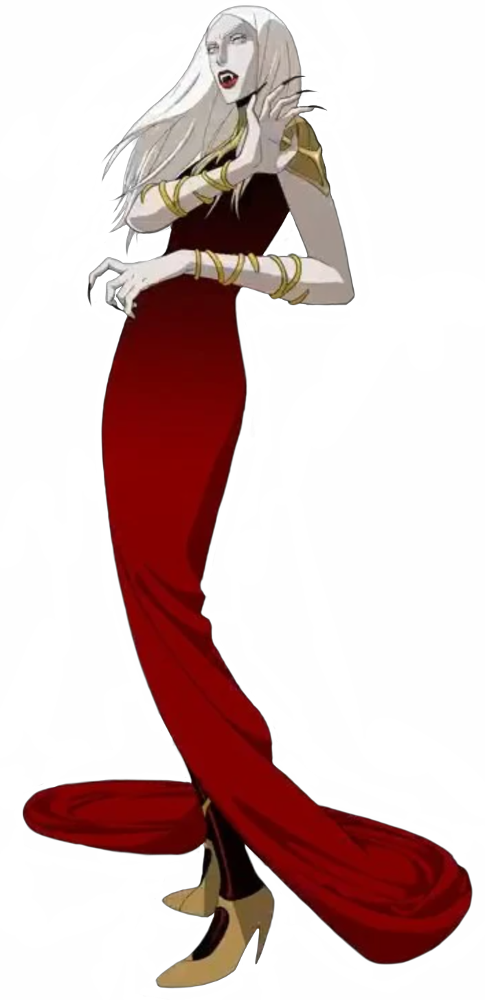 |
Carmilla es una vampiresa, la cual traiciona a Dracula dedbido a que pensaba que asesinar a todos los humanos era una perdida de tiempo y para poder conquistar todos los territorios que este poseeia |